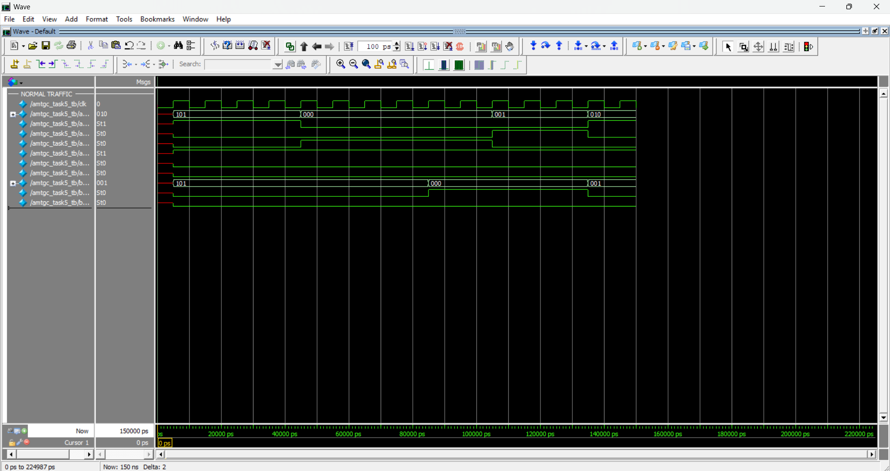
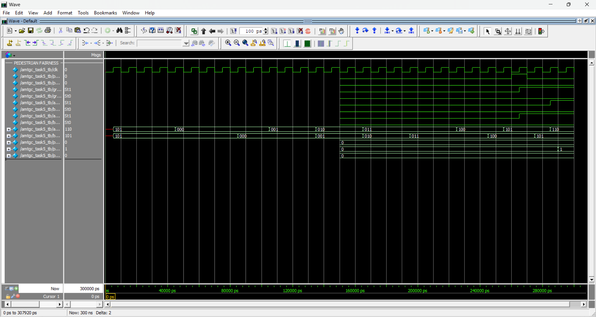
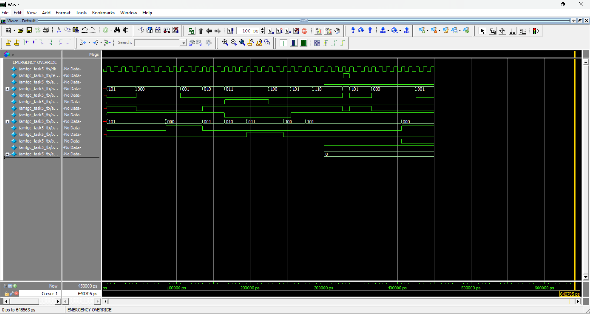
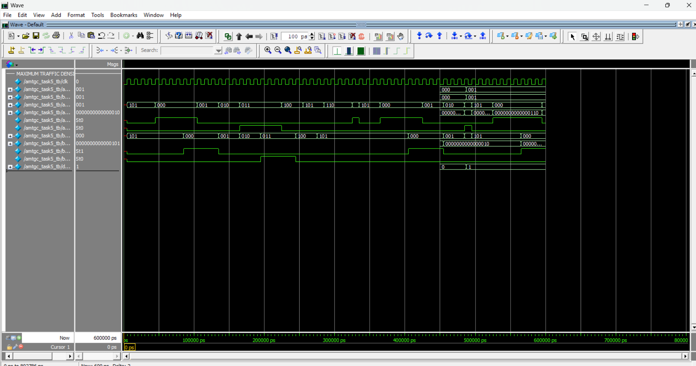
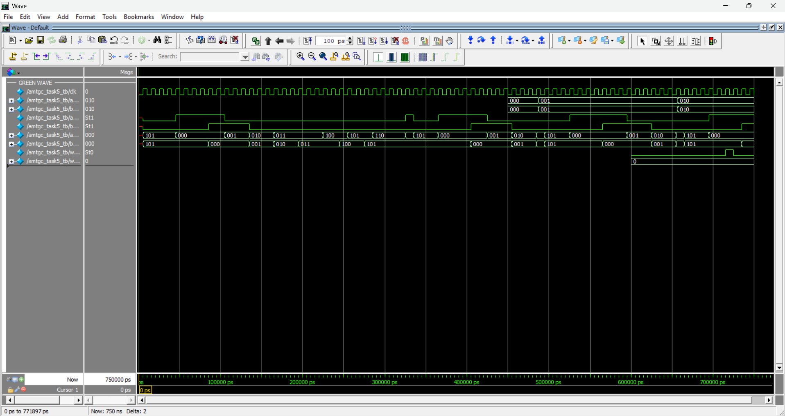

Δ
Adaptive Green Time
3-bit traffic-density input adjusts the green target within configured minimum and maximum limits.
AMTGC is a modular digital traffic-control system for two coordinated four-way junctions, combining adaptive green timing, fair pedestrian arbitration, emergency override and green-wave coordination.
01 / PROJECT OVERVIEW
The controller replaces isolated fixed-time logic with a coordinated architecture that can adapt green duration to traffic density while keeping safety constraints explicit in the RTL.
3-bit traffic-density input adjusts the green target within configured minimum and maximum limits.
A shared arbiter resolves simultaneous requests and rotates priority after service.
System-wide emergency handling drives both junctions toward the safe all-red condition.
Junction B is coordinated from the North-South green event of Junction A using a defined delay.
Traffic sequencing is expressed as explicit FSM phases with safe all-red transitions.
The final testbench checks safety, corner cases, adaptive timing and randomized scenarios.
02 / ARCHITECTURE
The top level integrates two junction controllers, shared pedestrian arbitration and green-wave coordination.
03 / FSM DESIGN
All normal traffic transitions pass through an all-red interval. Pedestrian operation is treated as an explicit phase.
04 / VERIFICATION
Replace the sample cards below with the actual ModelSim screenshots generated from your final verified RTL.
05 / PROJECT SCREENSHOTS
Each image slot uses a fixed filename so you can replace the placeholder directly without editing the page.





/screenshots with your real PNG screenshots,
keeping the same filenames or updating the image references in index.html.
06 / TECHNOLOGY
07 / PROJECT LINKS
Use the public links below for the code, report and demonstration video.